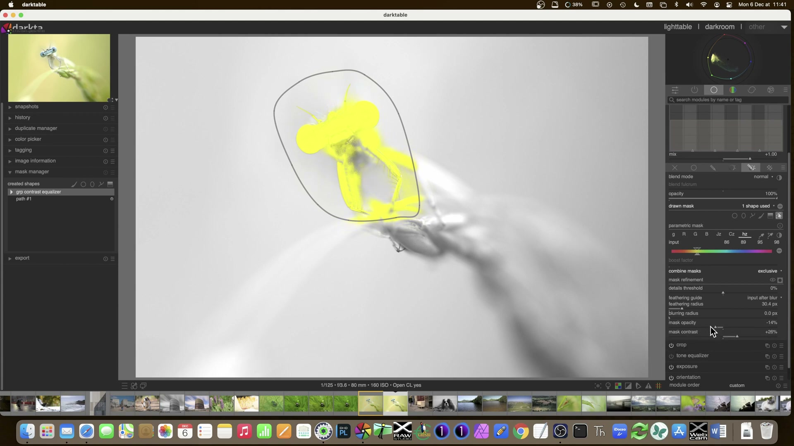
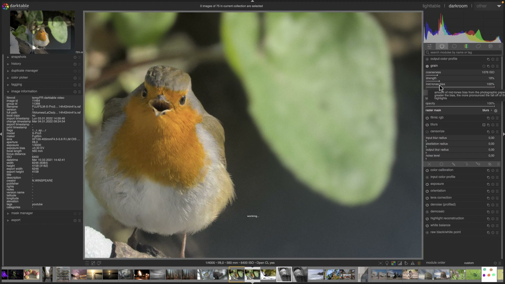
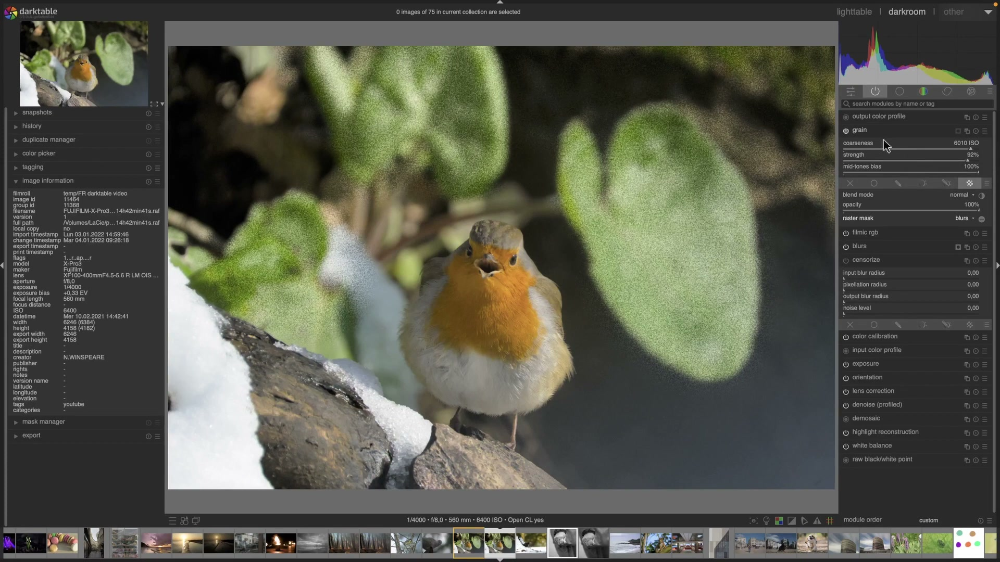
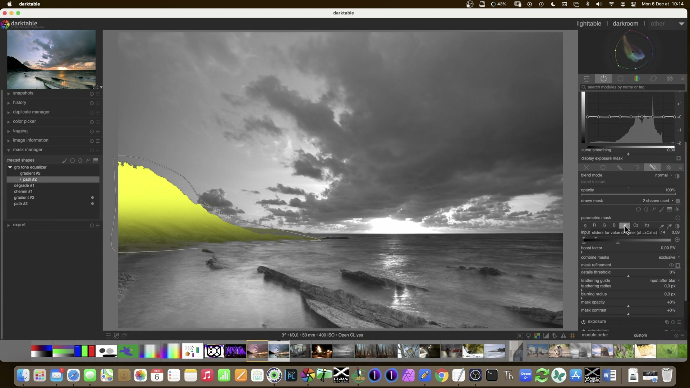

Grain¶
Il modulo grain simula la grana tipica delle pellicole analogiche, aggiungendo una texture sottile e organica all’immagine. A differenza di filtri di rumore o di sfocatura, il grain opera in modo fisicamente plausibile: è calcolato esclusivamente sul canale L dello spazio colore Lab, preservando la struttura cromatica e la nitidezza dei dettagli1. Questo approccio lo rende particolarmente adatto per applicazioni artistiche (ritratti, street, b/n) dove si desidera un aspetto “cinematografico” senza compromettere la definizione o introdurre artefatti cromatici2.

Grain lavora solo sul canale L di Lab
Il modulo non modifica i canali a/b di Lab, né i canali RGB. Questo significa che il grain è luminoso, non cromatico: non altera la saturazione, la tonalità o la bilancia dei colori. È quindi sicuro da usare prima o dopo il tone mapping, purché non venga applicato in combinazione con moduli che degradano la precisione del canale L (es. compressione JPEG lossy pre-elaborazione)1.
Panoramica¶
Il modulo grain è intenzionalmente minimalista: offre solo due controlli principali, entrambi scalati per emulare comportamenti realistici della pellicola:
- Coarseness (dimensione della grana): controlla la scala spaziale del pattern, mappata approssimativamente su una scala ISO equivalente. Valori più alti simulano pellicole ad alta sensibilità (ISO 800–3200), con grana visibile e irregolare1.
- Strength (intensità della grana): regola l’ampiezza della variazione di luminanza introdotta dal pattern. Non è un semplice “opacità”: agisce come un guadagno sul segnale di grana, influenzando sia il contrasto locale che la percezione della profondità tonale1.
A differenza di altri software (es. Lightroom), darktable non genera grana parametrica in tempo reale tramite shader GPU, ma utilizza un algoritmo deterministico basato su noise Perlin semplificato, calcolato in CPU durante la pipeline di elaborazione. Ciò garantisce riproducibilità perfetta tra sessioni e dispositivi, ma richiede un leggero overhead computazionale3.
Flusso di lavoro consigliato¶
Il grain è un modulo finale, da applicare dopo tutti gli interventi di correzione tonale, cromatica e geometrica. La sua posizione ideale nella pipeline è subito prima del modulo output color profile, per garantire che la grana sia integrata correttamente nello spazio di destinazione2.
1. Esposizione → Bilanciamento bianco → Denoise
|
2. Tone mapping (AGX / Filmic RGB)
|
3. Correzioni cromatiche (color balance rgb, color calibration)
|
4. Grain ← posizione ottimale
|
5. Output color profile → Export
Grain non è rumore: usalo per il carattere, non per mascherare
Il grain non sostituisce la riduzione del rumore. Se l’immagine presenta rumore digitale (granulosità casuale, artefatti cromatici), applicare prima denoise (profiled) o denoise (wavelets). Il grain va aggiunto solo quando il segnale è pulito: serve a dare personalità, non a nascondere difetti2.
Passo 1: Coarseness — scegli la “pellicola”¶
Il primo passo è impostare la dimensione della grana in base all’effetto desiderato:
- Basso (0.1–0.5): grana fine, simile a Kodak Portra 160 o Fuji Acros II. Ideale per ritratti in studio o paesaggi ad alta definizione1.
- Medio (0.6–1.2): grana media, simile a Kodak Tri-X 400 o Ilford HP5+. Usato comunemente per street photography e reportage2.
- Alto (1.3–2.0): grana marcata, simile a Kodak P3200 o Cinestill 800T. Richiede immagini ben esposte e con buon contrasto, altrimenti rischia di apparire artificiale1.
Evita valori >2.0
Coarseness oltre 2.0 produce pattern troppo grandi e regolari, perdendo l’aspetto organico della pellicola. Può causare aliasing visibile su schermi ad alta densità pixel (Retina, 4K+). Non è mai necessario superare questo limite1.
Passo 2: Strength — regola la “presenza”¶
La forza controlla quanto la grana influenzi la percezione visiva:
- Basso (5–20%): grana quasi impercettibile, utile per dare “calore” a immagini digitali troppo lisce.
- Medio (25–50%): intensità standard, sufficiente per creare profondità e coesione visiva senza dominare la scena2.
- Alto (55–85%): effetto marcato, adatto a stili vintage o b/n ad alto impatto. Oltre l’85% tende a appiattire le transizioni tonali1.
Parametri principali¶
| Parametro | Range | Default | Descrizione |
|---|---|---|---|
| Coarseness | 0.01 – 2.00 | 1.00 | Scala della grana. Valori >1.0 simulano pellicole ISO ≥400. È mappato su una scala logaritmica per maggiore controllo nei bassi valori1. |
| Strength | 0% – 100% | 50% | Intensità del pattern di grana. Non è un’opacità: modula l’escursione di luminanza del noise. Valori >70% possono ridurre la percezione del microcontrasto1. |
Usa i preset per partire rapidamente
darktable include preset preconfigurati per pellicole iconiche (es. Kodak Tri-X, Ilford Delta 3200). Sono accessibili dal menu a tendina in alto nel modulo grain. I preset sono ottimizzati per un uso immediato e possono essere modificati successivamente2.
Consigli avanzati¶
Combinazione con il modulo blurs¶
Il grain può essere potenziato da una leggera sfocatura selettiva dello sfondo, per simulare l’effetto “bokeh granuloso” delle pellicole cinematografiche. Procedi così:
- Applica
blurscon tipolens, raggio 2–5 px, 5–7 lamelle, concavity 0.8–1.0 - Usa una maschera disegnata per isolare solo lo sfondo
- Applica
grainglobalmente concoarseness = 0.8–1.2,strength = 30–40% - Verifica che la grana sul soggetto rimanga più definita rispetto allo sfondo

Grano per immagini in bianco e nero¶
Nel workflow b/n, il grain è fondamentale per sostituire la “struttura” persa con la rimozione del colore. Usa questi valori tipici:
Coarseness: 0.9–1.4 (per enfatizzare la trama della pelle o del tessuto)Strength: 45–65% (più alto rispetto al colore, perché la grana diventa l’unica fonte di texture)- Attenzione: evita di applicare
graindopomonochrome, poiché quest’ultimo opera in RGB e potrebbe alterare la distribuzione del noise. Preferiscigrainprima dimonochromeo in un flusso scene-referred4.
Performance e compatibilità¶
- Il modulo
grainè stato ottimizzato per prestazioni in darktable 4.4+: il codice SSE2 è stato rimosso e sostituito con implementazioni parallele più efficienti3. - Funziona in tutti i flussi di lavoro (scene-referred e display-referred), ma dà risultati più coerenti nel primo3.
- Non supporta maschere parametriche o disegnate: è sempre applicato globalmente1.
Esempio: Simulazione Kodak Tri-X 400 da Weekly Edit 20¶
Da Weekly Edit 20: Rajoutons du grain — darktable FR (timestamp 870s)
1. Carica l’immagine RAW (es. Welder RAW) e applica exposure per correggere l’esposizione a +0.7 EV
2. Imposta white balance su Flash (corrispondente alla illuminazione di scatto)
3. Nella sezione grain, seleziona il preset Kodak Tri-X dal menu a tendina
4. Regola coarseness = 1.12 e strength = 48% per adattare la grana al tono del volto
5. Confronta con lo screenshot a 870s: il grano appare uniforme sulle zone chiare, con minima accentuazione sui bordi oculari2

Esempio: Maschera manuale per grana selettiva¶
Da Weekly Edit 20 — darktable FR (timestamp 1198s)
1. Attiva la maschera disegnata (drawn mask) e traccia un path preciso intorno al soggetto (es. insetto su foglia)
2. Nel modulo grain, clicca sull’icona della maschera (icona a forma di cerchio con punto centrale) per abilitare l’applicazione selettiva
3. Imposta coarseness = 0.85, strength = 32% per ottenere una grana fine ma presente sul soggetto
4. Disattiva la maschera per verificare che lo sfondo rimanga privo di grana: la transizione deve essere netta senza frange2

Tabella preset built-in¶
darktable 4.8 include 8 preset ufficiali per grain, preconfigurati in base a profili di pellicola reali e testati su immagini di riferimento. Tutti i preset operano esclusivamente sul canale L di Lab e sono compatibili con flussi scene-referred1.
| Preset | Quando usarlo | Note |
|---|---|---|
Kodak Tri-X |
Street photography in luce mista o bassa; soggetti con texture media (tessuti, pelle, cemento) | Basato su ISO 400; coarseness ≈ 1.1, strength ≈ 45%1 |
Ilford Delta 3200 |
Reportage notturno o immagini ad alto contrasto con forte dinamica | Grana molto irregolare; coarseness = 1.85, strength = 62%1 |
Kodak Portra 160 |
Ritratti in studio o paesaggi con dettaglio fine | Grana quasi invisibile; coarseness = 0.32, strength = 18%1 |
Fuji Acros II |
B/N architettonico o documentario con controllo assoluto del microcontrasto | Grana fine e omogenea; coarseness = 0.28, strength = 12%1 |
Cinestill 800T |
Stili cinematografici con dominanti arancio/ambra | Grana media con leggera anisotropia; coarseness = 1.25, strength = 53%1 |
Agfa APX 400 |
Fotografia analogica vintage con resa morbida | Grana leggermente sfumata; coarseness = 0.95, strength = 38%1 |
Fomapan 400 |
B/N ad alto impatto con grana pronunciata ma non invasiva | Grana medio-fine con elevata coesione tonale; coarseness = 1.05, strength = 47%1 |
Custom |
Personalizzazione avanzata o workflow ibridi (es. integrazione con LUT esterne) | Valori iniziali: coarseness = 1.00, strength = 50%1 |
Domande frequenti¶
Problema: Grain non appare dopo l’export in JPEG¶
Il grain è calcolato sul canale L di Lab, ma alcuni profili ICC di output (es. sRGB con gamma 2.2) comprimono eccessivamente le variazioni di luminanza sottili. Inoltre, l’export JPEG con qualità <95% introduce artefatti che mascherano la grana. Soluzione: usare output color profile con sRGB (linear) o Adobe RGB (1998) e impostare JPEG quality = 98%1.
Problema: Effetto “plastico” o “digitale” anche con bassi valori di strength¶
Questo accade quando grain è applicato prima di filmic rgb o base curve. Il modulo grain richiede un segnale già mappato in uno spazio tonale stabile: se applicato su dati lineari non compressi, la sua variazione di luminanza viene amplificata artificialmente. Soluzione: posizionare grain dopo filmic rgb e prima di output color profile3.
Problema: Grana visibile solo su monitor 4K, invisibile su schermo standard¶
Dipende dalla densità di pixel e dalla distanza di visione. Il pattern di grana è fisso in pixel, non scalato. Su monitor ad alta densità (≥220 PPI), la grana è percepibile a 50 cm; su schermi standard (≤110 PPI), serve avvicinarsi a ≤30 cm. Soluzione: aumentare coarseness di +0.15–0.25 per schermi Retina/4K, mantenendo strength invariato1.
Problema: Grana scompare dopo aver applicato censorize su parte dell’immagine¶
Il modulo censorize applica un blur gaussiano seguito da rumore luminoso, che sovrascrive il pattern di grain. Poiché grain non supporta maschere, non può essere riapplicato selettivamente. Soluzione: applicare censorize prima di grain, oppure usare blurs + grain per simulare un effetto di bokeh granuloso senza perdere il controllo globale5.
Riferimenti visuali¶
Grain · frame a 852s da video YouTube
Grain · frame a 870s da video YouTube
Grain · frame a 1198s da video YouTube
Risorse aggiuntive¶
- darktable 4.8 user manual — grain module
- Weekly Edit 20: Rajoutons du grain — darktable FR (video tutorial)
- Performance improvements in darktable 4.4 — official notes
- PIXLS.US — Digital B&W Conversion (GIMP) (principi applicabili anche a grain in b/n)
- darktable 4.8 user manual — blurs module
- darktable 4.8 user manual — denoise (profiled) module
Fonti¶
-
darktable 4.8 user manual - grain, https://docs.darktable.org/usermanual/4.8/en/module-reference/processing-modules/grain/ ↩↩↩↩↩↩↩↩↩↩↩↩↩↩↩↩↩↩↩↩↩↩
-
Weekly Edit 20: Rajoutons du grain - darktable FR, https://darktable.fr/posts/2016/12/traitement-par-darktable-20-rajoutons-du-grain/ ↩↩↩↩↩↩↩↩
-
Version 4.4.0 - darktable FR, https://darktable.fr/posts/2023/06/notes-version-4.4/#am%C3%A9lioration-des-performances ↩↩↩↩
-
PIXLS.US - Digital B&W Conversion (GIMP), https://pixls.us/articles/digital-b-w-conversion-gimp/ ↩
-
darktable 4.8 user manual - blurs, https://docs.darktable.org/usermanual/4.8/en/module-reference/processing-modules/blurs/ ↩